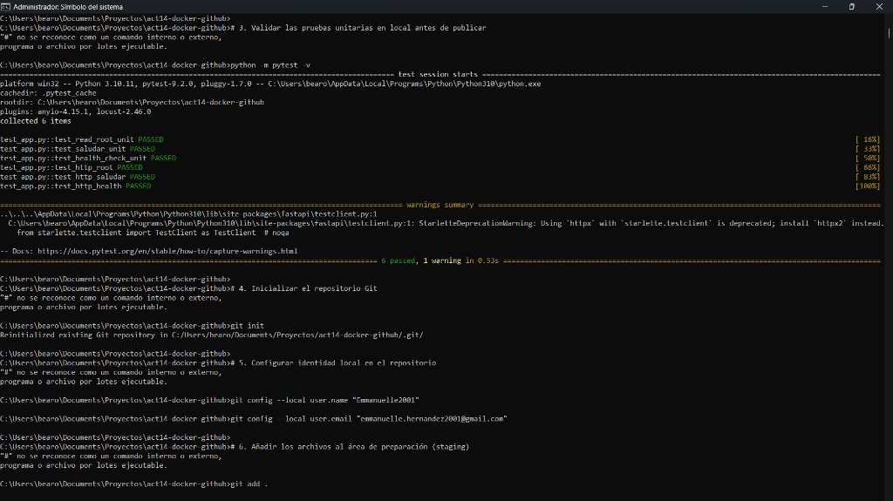
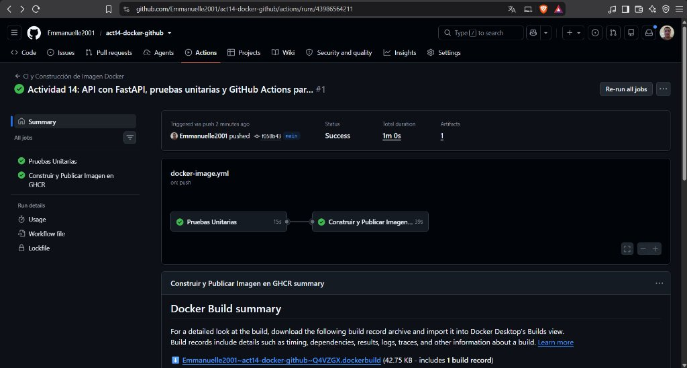
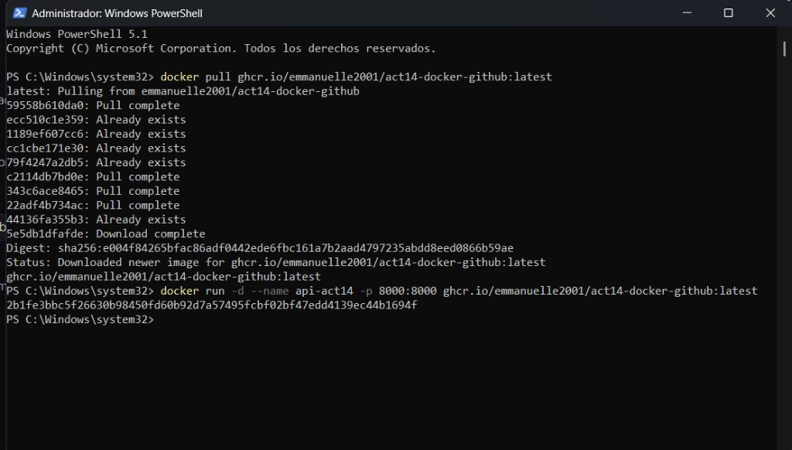
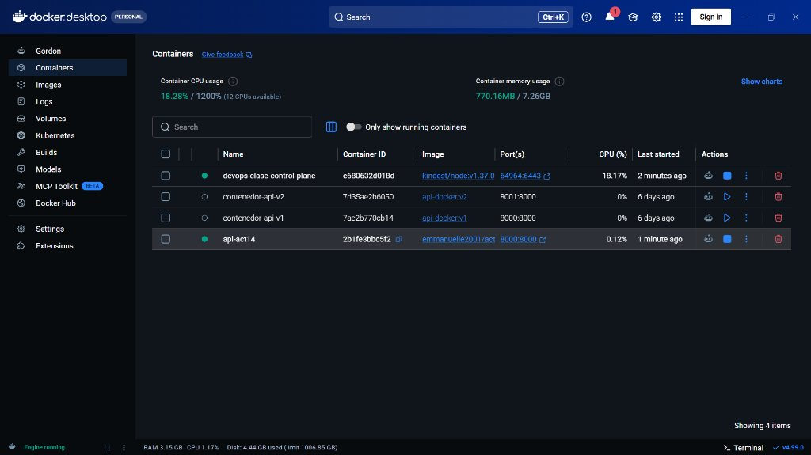
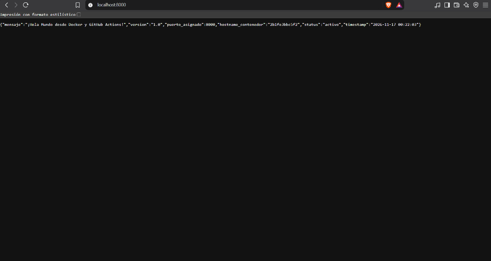

El objetivo de esta práctica es implementar un ciclo de vida completo de Integración Continua y Despliegue Continuo (CI/CD) utilizando GitHub Actions y el registro de contenedores GitHub Container Registry (GHCR).
A través de este flujo automatizado, se valida el código fuente mediante pruebas unitarias automáticas con pytest y, tras su aprobación exitosa, se compila una imagen Docker optimizada de una API desarrollada en Python con FastAPI, publicándola en ghcr.io para su posterior descarga (pull) y ejecución (run) en un entorno local.
Los comandos originalmente provistos de forma desordenada corresponden al siguiente orden de ejecución técnica:
# ==========================================
# FASE 1: PREPARACIÓN LOCAL Y REPOSITORIO GIT
# ==========================================
# 1. Instalar requerimientos base de la API
python -m pip install -r requirements.txt
# 2. Instalar dependencias de desarrollo y testing (pytest, httpx)
python -m pip install -r requirements-dev.txt
# 3. Validar pruebas unitarias en local antes de publicar
python -m pytest -v
# 4. Inicializar repositorio Git local
git init
# 5. Configurar identidad local en el repositorio
git config --local user.name "Emmanuelle2001"
git config --local user.email "emmanuelle.hernandez2001@gmail.com"
# 6. Preparar y versionar archivos
git add .
git commit -m "feat: configuracion de API, tests y workflow de Docker en GHCR"
git branch -M main
git remote add origin https://github.com/Emmanuelle2001/act14-docker-github.git
git push -u origin main
# ==========================================
# FASE 2: DESCARGA Y EJECUCIÓN CON DOCKER
# ==========================================
# 7. Descargar la imagen generada en GitHub Container Registry
docker pull ghcr.io/emmanuelle2001/act14-docker-github:latest
# 8. Ejecutar la imagen descargada en un contenedor Docker local
docker run -d --name api-act14 -p 8000:8000 ghcr.io/emmanuelle2001/act14-docker-github:latest
Los steps del archivo .yml se encontraban en una lista plana con errores de secuenciación y permisos. Se corrigieron separándolos en dos jobs dependientes:
test: Valida el código con Python 3.12, instalando requirements-dev.txt y ejecutando pytest -v.imagen: Depende de que las pruebas pasen (needs: test), declara permisos explícitos de escritura de paquetes (permissions: packages: write), convierte el nombre del repositorio a minúsculas, configura Docker Buildx, inicia sesión en GHCR y compila/publica la imagen.Se ejecutó python -m pytest -v validando que las pruebas unitarias pasaran satisfactoriamente antes de publicar los cambios:

Al hacer push a la rama main, GitHub Actions activó el flujo de trabajo ejecutando exitosamente el job de pruebas y el job de generación de imagen Docker en GHCR:

Se realizó la descarga de la imagen generada directamente desde ghcr.io con docker pull y su posterior ejecución en segundo plano con docker run en el puerto 8000:

Se corroboró en el panel de control de Docker Desktop que el contenedor api-act14 se encuentra en estado activo (Running) en el puerto asignado 8000:

Se consultó el endpoint raíz http://localhost:8000 en el navegador web, obteniendo la respuesta en formato JSON con el hostname correspondiente al contenedor activo:

La práctica permitió integrar de forma exitosa los conceptos de control de versiones con Git, automatización de pruebas y publicación de artefactos en la nube mediante GitHub Actions y GHCR. La separación de requerimientos optimizó el tamaño de la imagen final generada, y la estructura modular de jobs garantiza que solo se publiquen versiones que hayan superado las pruebas de calidad de forma rigurosa.